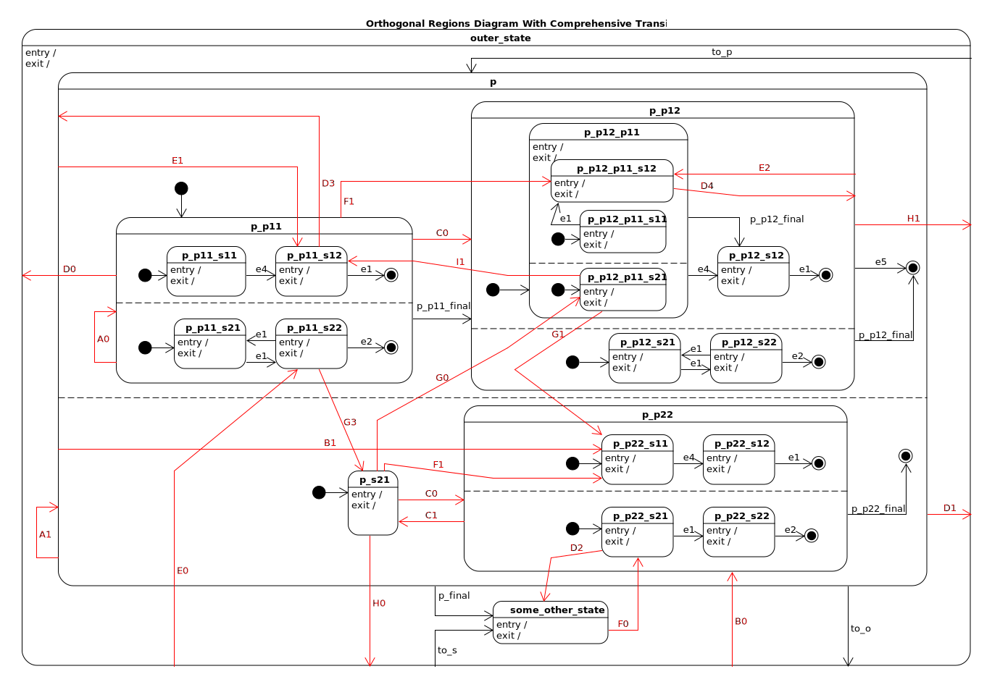
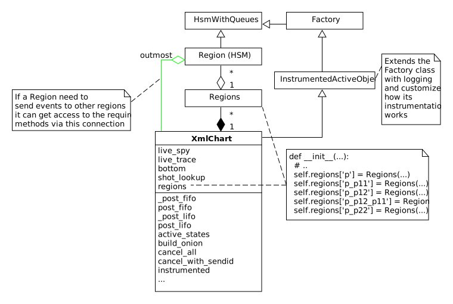

Debugging is twice as hard as writing the code in the first place. Therefore, if you write the code as cleverly as possible, you are, by definition, not smart enough to debug it. – Brian Kernighan.
Note
This portion of the document is a collection of notes I have been taking as I write the software. It is me, writing to think through the problem. It is not meant for general consumption, since a lot of the words/definitions used to describe the system are inconsistent; it’s a work in progress.
But if you would like to follow this document, first make sure you have a firm understanding of the miros library.
How it Works#
Context and Design Goal#
Here is an example of a statechart diagram written using David Harel’s parallel region’s drawing technique:
The state machines separated from one another with dashed lines are said to be running in “parallel regions”. This means any event seen by the whole machine will be seen by each region and both regions are expected to run concurrently as if they were running on their own computer. A statechart which supports the parallel region pattern can have one or more active state at a time. The event processing algorithm used by miros does not support the parallel regions pattern.
But miros does support the ability to place an HSM within another HSM. This is called the “orthogonal component” pattern (an HSM in an HSM). Since the state of an inner HSM is in a different state than the outer machine which holds it, the orthogonal component pattern can have more than one active state like the parallel region pattern.
The goal of this documentation is to show how to map the orthogonal component pattern onto the parallel region pattern.
Structure of the Code#
From a very high level the code is structured like this:

The “orthogonal components” will be the Region objects described in the diagram above. An “orthogonal component” is another name for an HSM inside of another HSM. So our Region objects will have to run within another HSM. They will either run within the outmost XmlChart statechart object or within another Region object.
The Region class is derived from the HsmWithQueues class. HsmWithQueues objects don’t have their own threads to watch for incoming events so neither will any Region object. The outmost XmlChart’s thread will have to watch for new events in its queue, then begin the process of driving these events deeper and deeper into its inner region objects.
The management, communication and graphical organization of all of the Region
objects, relative to one another, will be managed by a Regions object. Through
the Regions methods, any region can access the methods controlling other regions
it is adjacent to in the hierarchy of HSMs via the inner, same and
outer attributes.
The XmlChart has many Regions and it inherits from the InstrumentedActiveObject which is just an ActiveObject with some additional logging and customized instrumentation features. Since the XmlChart inherits from the ActiveObject, it will have a thread and a set of queues which can receive events asynchronously from programs running in other threads. The thread of the XmlChart will drive all of its inner hierarchical state machines, and it will filter and drive events deeper and deeper into it’s architecture to perform the behaviors specified by the Harel drawing formalism.
Each region object has access to the methods of the XmlChart object via their
outmost attribute.
How the Region Class Relates to the Parallel Region Drawing#
There will be one Region object for every region in a diagram which supports the dashed line notation:
A Region is just an HsmWithQueues with some additional methods; so it’s just an HSM. The Region will be attached to a state machine who’s inner part is identical to that in the parallel region diagram, but with three additional outer states and event handlers. These outer structures will be invisible to the user, and will provide the means to control the orthogonal component so that its inner state machine will behave as if it was a parallel state. I will talk more about these outer structures later, but for now know that they are just there to map one technique onto another.
Parallel regions occur within a state. A state function that needs to connect to inner, embedded HSMs will use the Regions object to do this work.
How the Regions Class Organizes a Graph of Region Objects#
The Regions object is constructed within the XmlChart class. A Regions object can construct and own many different region objects.
The Regions class can inject and drive events into all of the Region objects it controls.

For an HHSM to work, a state function operating in one HSM (region) will have to be able to drive events into other HSMs (other regions). The Regions class provides this ability: it allows a state function to drive events to inner, same or outer levels of the layered HSM hierarchy.
Both the Regions objects and the outmost statechart object, XmlChart, have
post_fifo, post_lifo and a host of other event control and driving
mechanisms. Since the Regions class and the XmlChart class use the same names
for the methods that do this work, you can say they are polymorphic; they have
the same interface. A state function will need to aim these methods at
different levels of the hierarchical HSM.
The Regions objects have limited graphical information. They only know about the “outer”, “same” and “inner” information of the Region objects they own:
outmost: The outer most statechart object. (green line)outer: HSMs one layer out in the parallel regions diagram. (magenta line)same: HSMs within the same parallel region. (orange line)inner: HSMs mapping to an inner parallel region of the state. (red line)
The outmost, outer and same attributes will be linked to a Region
object at its moment of creation by the Regions object. The inner attribute
is set dynamically because the inner
attribute is not something that will apply to an entire region object. The
region object will contain many different states in the region and only the
injector will need a connection to the inner region. To see what I mean, look
at <<x>>_region_state_1, it will not have the same inner relation that
p_state_function will have to the parallel regions contained within
p_state_function.
But a function can’t really own anything in OO theory. If you read the code you
will see that the inner attribute is assigned dynamically by a decorator.
Injector State Functions, Region Objects and Regions Objects in a Graph#
State functions have Regions objects which have Region objects which have state functions. This is all very confusing. Seeing how things inter-relate in a graph would be nice, but this is not supported with idiomatic UML.
So we will break the rules and describe their graphical relationship like so:

r.outer.post_fifo(...): post to all HSMs one level up in the hierarchy (magenta line)r.same.post_fifo(...): post to all HSMs at the same level of the hierarchy (orange line)r.inner.post_fifo(...): post to all inner HSMs in the state. (red line)
Place your eyes on the outer most Regions object. It has multiple region objects. Its top most region object drives a partially drawn HSM. Within this HSM is an injector, or a state function that has parallel regions within it. This injector function is called p_p11.
The p_p11 injector function needs to control the collection of inner region
objects, so it makes r.inner.post_fifo(...) calls to do this. By convention
the Regions object is given the same name as the injector which needs its
methods.
Now look within the regions being managed within the p_p11 Regions object. If a
state machine inside of one of its orthogonal components needs to use the
r.same.post_fifo(...), it will be posting and driving events through all of its sibling
orthogonal components.
There will be times when a state function needs to call to drive events through
its super-region or parent region components. To do this it uses the
r.outer.post_fifo(...) syntax.
Not included on the above diagram is a posting to the outer statechart, this
would be done as r.outmost.post_fifo(...).
How the XmlChart Organizes its Regions#
The XmlChart class is a statechart which has a bunch of Regions objects, which in turn manage groups of orthogonal components (Region objects). I have discussed the inner dynamics already so I will focus now on how Regions objects are organized within the XmlChart class: they are in a data dictionary. This dictionary has key names that match the injector functions that own them.
Each state function will receive a handle to its Region object and an event. All Region objects will have an attribute that points to the outmost chart, the XmlChart object. It is through this reference that the Regions objects are looked up to get the methods required to post and drive events to other regions.
The XmlChart is the only HSM in the whole system that has a thread. This thread must be used to drive all of the inner HSMs. It acts like the spring drive in a mechanical watch; it drives gears which drive smaller gears which drive smaller gears. Any event that is passed to our chart must first be managed by the XmlChart class, then pushed into the inner Regions. All injector functions will also drive their received external events deeper and deeper into the chart until the whole collective RTC event is finished.


How the Parallel-Region is mapped onto the Orthogonal Component#
To get events into the inner regions of the chart you must pass them via the injectors (p in this diagram):

From the top diagram we can see how the bottom diagram should work. If we start
the chart in the outer_state, send a to_p, then send an e1, the active
states should be ['p_s12', '...'].
Now look at how an event is injected into a parallel region inside of another parallel region:

If we start the chart in the outer_state, send a to_p, then send an e1,
the chart should settle into [['p_p11_s12', '...'], '...'].
From this simple exercise we can see how the pictorial-descriptive-power of the orthogonal components is being completely outclassed by the Harel-parallel-regions drawing technique.
Now imagine the orthogonal component diagram for this:
I could draw it, but it would stop being useful.
Now imagine trying to draw the above using finite state machines. It may be possible, but I know I wouldn’t want to do it, and I certainly wouldn’t want to maintain the diagram and its code base.
WTF Transitions, Meta Events and Transitions Across Parallel Regions#
I named the transitions across parallel regions WTF transitions (or WTF events), because initially I had no idea how to implement them. Eventually I discovered a way to get them working: I made events which carried other events which could react to custom event handlers written into many of the state functions.
Since an event carrying information about another event in its payload is a kind of meta phenomenon, I decided to call these events, meta-events.
A Walk through of a WTF Transition, Case 1#
Here is a walk through of our first WFT transition: E0

We will use meta events to pass messages in and out of orthogonal components.
As you walk through the code, remember that _post_fifo and _post_lifo
only place events into the queues of all of the regions connected to those
calls. post_fifo and post_lifo place events and drives those events
through their connected orthogonal components.
If we started the above chart in the outer_state and sent it an E0 we would
end up in the [['p_p11_s12', '...'], ['...']] states.
The code that makes the programmable init work isn’t on the diagram, but it looks like this:
elif(e.signal == signals.INIT_SIGNAL):
(_e, _state) = r.peel_meta(e) # search for INIT_META
# if _state is a child of this state then transition to it
if _state is None or not rr.has_a_child(_state):
status = r.trans(p_p11) # the default state to transition to
else:
status = r.trans(_state)
if not _e is None:
rr.post_fifo(_e)
Note
As I continued on the project, I extended the trouble shooting code included
with the miros python libray. To have a meta-event trace appear in your logs,
look for the definition of events_to_investigate at the top of your
experiment file and assign the signal name of the meta event you want to
investigate:
events_to_investigate = 'E1'
A Walk through of a WTF Transition, Case 2#
Let’s focus on something a bit more difficult, the G1 WTF event (click to
enlarge):

From the top Harel diagram, we see that if the system is in p_p11_s12 and we
receive a G1 we should transition into p_s22. But what happens to
region 1 of p? Well, we want it to be non-reactive, unless it is
explicitely reactivated by to_p.
To summarize:
[['p_p11_s12', 'p_p11_s21'], 'p_s21'] <- G1 \
== ['p_r1_under_hidden_region', 'p_s22']
A Walk through of a WTF Transition, Case 3#
Let’s focus on something a bit less difficult, the G0 WTF event (click to
enlarge):

From the top Harel diagram, we see that if the system is in p_p22 and we
receive a G0 we should transition into p_p11_s12. Like the previous
example we want a region to become non-reactive, but in this case it’s region 2
of p.
To summarize:
[['p_p11_s12', 'p_p11_s21'], 'p_s21'] <- G1 \
== [['p_p11_s12', 'p_p11_s21'], 'p_r2_under_hidden_region']
Creating a Systematic way of Naming WTF Events#
This library will support events which transition across regional and parallel boundaries. To do this I need to figure out how to build a small testing diagram from which I can test every supported transition type. This testing diagram will serve as the specification for the parallel region feature of this library.
To begin this theoretical work lets start by examining the topological diagrams taken from figure 4.6 on page 178 of Practical UML Statecharts in C/C++, Second Addition. Here, Miro Samek demonstrates what family of graphs are supported by his event processor (then does a code walk through about how each graph is supported).
From page 178 of Practical UML Statecharts in C/C++, Second Addition#
Here is a coloured and named list of transition classes which are being added by this library to provide the “parallel regions” feature:

To create a test pattern, I need to consider all combinations of the transition types with the topological sub-graphs.

Not all transitions make sense, and the transitions mapped onto a nominal statechart have already been verified; so instead of having to test 32 possible topologies, we only have to map (at a minimum) 17 types of transitions.
These 17 types of transitions are mapped onto the following test pattern:

Note that there are more than 17 different events being tested. Some of the events are there to conveniently transition from test to test and others are there for testing the edge conditions of the design.
An event is named like this:
<transition-type topology-type number>
For example, PC1, is testing a parallel transition of the PC topology type. PC1 is the first event that is testing this type of transition, so it is post-pended with the number 1.
The test pattern is a good first step for figuring out what has to be tested to build a robust feature. At any time in the future, I can add more events (like the red hooks). If you are reading this and see a major bug in my theory, email me and let me know.
Beastiary#
Transition Type |
Name |
|---|---|
R: Transitions within inner orthogonal regions |
|
SR: Transitions between the bounds of the orthogonal region and outer statechart |
|
P: Transitions across parallel regions |
|
H: Hooks and transitions |
|
S: Standard Transitions |
|
final: An SCXML addon. When all regions of a state transition to their final pseudostate, create then post an artificial event with the signal name equal to the outer state holding the regions, with the string “_final” post pended to the signal’s name. |


Construction Tactics#
To provide the parallel region feature, miros-xml writes a bunch of miros statechart code for you. The concurrent parallel states behavior is mimicked by linking a bunch of orthogonal regions together with hidden states and special handling of recursively structured events. This section describes how these features were constructed.
This package uses a set of naming conventions when trying to decide what to call hidden states, regions, and final signals. In this way it takes a “convention over configuration” approach. The convention emerged from wrestling with the problem, and on the most part it should be hidden from view. Nonetheless, this convention is described in this section so that I can write them down as they are invented.
Experimental Files#
The parallel region feature is being built out using four files:
/experiment/logger_config.yaml/experiment/xml_chart_5.py/experiment/augment.py/experiment/xml_chart_5.2.py
The logger_config.yml contains logging specifications. It is very difficult to
trace a recursive WTF event as it is being passed between various orthogonal
states. Logging drops the instrumentation records, what was done by which part
of the program into files that can be inspected in great detail.
The xml_chart_5.py file is flat in its architecture. All of the state functions
are written out by hand, so a lot of the code is copied and pasted. The
xml_chart_5.py was the program used to build up the hidden state features and
meta event handling. It has been left in this flat state to make it easy to
debug WTF event logic.
The augment.py was used to demonstrate advanced-partial-function
techniques
like, asking a partial to add or removed behavior from itself, and return a new
working function that can be added to a statemachine. These partial functions
can also be called in such a way that they will describe what they do.
The xml_chart_5.2.py file uses the techniques of augment.py to squish
the longer functions of xml_chart_5.py into a collection of smaller templates.
The regression tests for these programs are written within them, so a program can just be run to see if it is working. While working on a program I watch for file modifications, then run the program to test itself:
sudo apt install -y inotify-tools # install a file-watcher
# use the file-watcher to re-run a test when it detects changes to a file
while inotifywait -e modify xml_chart_5.2.py logger_config.yaml;\
do python xml_chart_5.2.py; done
Naming Conventions#
Note
This section applies to xml_chart_5.py, logger_config.yaml and xml_chart_5.2.py.
Rules:
An injector function and its region have the same name
final signal name: ‘<regions_name>_final’
WTF meta event names: <purpose>_META_SIGNAL, where purpose is
INIT,EXIT,BOUNCE_SAME,BOUNCE_ACROSS
OUTER_TRANS_REQUIRED

Automatic Construction of Injectors#
Note
This section applies to xml_chart_5.2.py
State functions have Regions objects which have Region objects which have state functions.
A parallel region can exist inside of any state function. In this architecture, the parallel regions feature is contained within a regions object. If the regions object exists within a state, that state is called an injector. An injector has the same name as the regions object it controls.
An injector is structured like any state function, it consists of a large
if-elif-else structure that helps the event processor make sense of the HSM’s
graph. To make an injector handle the meta-events, or the events that give the
illusion of a parallel region, it contains special handling for
INIT_META_SIGNAL, EXIT_META_SIGNAL and so on.
Here is an example of an injector from xml_chart_5.py, with the code common to
all injectors highlighted.
1 2 3 4 5 6 7 8 9 10 11 12 13 14 15 16 17 18 19 20 21 22 23 24 25 26 27 28 29 30 31 32 33 34 35 36 37 38 39 40 41 42 43 44 45 46 47 48 49 50 51 52 53 54 55 56 57 58 59 60 61 62 63 64 65 66 67 68 69 70 71 72 73 74 75 76 77 78 79 80 81 82 83 84 85 86 87 88 89 90 91 92 93 94 95 96 97 98 99 100 101 102 103 104 105 106 107 108 109 110 111 112 113 114 115 116 117 118 119 120 121 122 123 124 125 126 127 128 129 130 131 132 133 | @othogonal_state
def p_p11(r, e):
status = return_status.UNHANDLED
__super__ = p_r1_over_hidden_region
__hooks__ = [signals.H1]
if(e.signal == SEARCH_FOR_SUPER_SIGNAL):
r.temp.fun = __super__
return return_status.SUPER
elif(e.signal == signals.SEARCH_FOR_META_HOOKS):
if e.payload.event.signal in __hooks__:
return return_status.HANDLED
# enter all regions
if(e.signal == signals.ENTRY_SIGNAL):
r.p_spy(e)
rsm(p_p11, e)
# search for INIT_META_SIGNAL
(_e, _state) = r.meta_peel(e)
investigate(r, e, _e)
if _state:
r.inner._post_fifo(_e)
status = return_status.HANDLED
elif(e.signal == signals.INIT_SIGNAL):
r.p_spy(e)
rsm(p_p11, e)
r.inner.post_lifo(Event(signal=signals.enter_region))
status = return_status.HANDLED
# any event handled within there regions must be pushed from here
elif(token_match(e.signal_name, "e1") or
token_match(e.signal_name, "e2") or
token_match(e.signal_name, "e4") or
token_match(e.signal_name, "SRH3") or
token_match(e.signal_name, "PG2")
):
r.p_spy(e)
r.inner.post_fifo(e)
status = return_status.HANDLED
elif(token_match(e.signal_name, "H1")):
r.scribble("p_p11 hooked")
status = return_status.HANDLED
elif token_match(e.signal_name, r.outmost.regions['p_p11'].final_signal_name):
r.p_spy(e)
status = r.trans(p_p12)
elif token_match(e.signal_name, "RC1"):
r.p_spy(e)
status = r.meta_trans(
e=e,
s=p_p11,
t=p_p12,
)
elif token_match(e.signal_name, "SRH2"):
r.p_spy(e)
status = r.meta_trans(
e=e,
s=p_p11,
t=middle,
)
elif token_match(e.signal_name, "RA1"):
r.p_spy(e)
status = r.meta_trans(
e=e,
s=p_p11,
t=p_p11,
)
elif token_match(e.signal_name, "PF1"):
r.p_spy(e)
status = return_status.HANDLED
elif token_match(e.signal_name, "PC1"):
r.p_spy(e)
status = r.meta_trans(
e=e,
s=p_p11,
t=p_s21,
)
elif(token_match(e.signal_name, "RF1")):
r.p_spy(e)
status = r.meta_trans(
e=e,
s=p_p11,
t=p_p12_p11_s12,
)
elif e.signal == signals.BOUNCE_SAME_META_SIGNAL:
r._p_spy(e)
_state, _e = e.payload.state, e.payload.event
r.inner._post_fifo(_e)
investigate(r, e, _e)
r.inner.post_lifo(Event(signal=signals.force_region_init))
status = return_status.HANDLED
elif e.signal == signals.OUTER_TRANS_REQUIRED:
status = return_status.HANDLED
r.p_spy(e)
(_e, _state) = e.payload.event, e.payload.state
investigate(r, e, _e)
if _state.__name__ == r.state_fn.__name__:
r.inner.post_fifo(Event(signal=signals.exit_region))
r.inner.post_fifo(Event(signal=signals.enter_region))
else:
if within(r.state_fn, _state):
status = r.trans(_state)
elif e.signal == signals.EXIT_META_SIGNAL:
r.p_spy(e)
(_e, _state) = e.payload.event, e.payload.state
investigate(r, e, _e)
# this appears backwards, but it needs to be this way.
if within(_state, r.state_fn):
# The next state is going to be our region handler skip it and post this
# region handler would have posted to the outer HSM
if(_e.payload.event.signal == signals.EXIT_META_SIGNAL or
_e.payload.event.signal == signals.BOUNCE_ACROSS_META_SIGNAL or
_e.payload.event.signal == signals.OUTER_TRANS_REQUIRED
):
(_e, _state) = _e.payload.event, _e.payload.state
r.outer._post_lifo(_e)
elif(_e.signal == signals.BOUNCE_ACROSS_META_SIGNAL or
_e.signal == signals.EXIT_META_SIGNAL):
r.outer._post_lifo(_e)
else:
r.same._post_lifo(_e)
status = return_status.HANDLED
elif e.signal == signals.exit_region:
r._p_spy(e)
status = r.trans(p_r1_under_hidden_region)
elif e.signal == signals.EXIT_SIGNAL:
r.inner.post_lifo(Event(signal=signals.exit_region))
rsm(p_p11, e)
r.p_spy(e)
status = return_status.HANDLED
else:
r.temp.fun = __super__
status = return_status.SUPER
return status
|
Our goal is to take a statechart XML spec, pass it into an XmlChart, and have
the XmlChart build up the Regions objects, the Region objects and the injector state
functions. The metaprogramming techniques used to build these kinds of functions are
described in this section,
and the technique can be examined in isolation in the example/augment.py
file.
The __init__ method of the XmlChart will build the Regions and Region
objects, then based on this work and information gleaned from the XML spec it
will automatically write the injector state functions, linking different HSMs
together.
The injector construction happens in stages, we:
Get the HSM that the injector belongs to.
Call a function that sets the injector’s hierarchy and builds up the injector’s boiler plate code, then returns a working augmentable function.
Customize the injector by having it drive events deeper into the HHSM:
Explicitly specify the signal_names that the deep parts of the chart need (suggest this behavior)
Iterate over the automatically generated final signals used by the deeper region objects, add injection code for these (suggest this behavior)
Explicitly specify how this injector needs to react to the events that it isn’t driving deeper into HHSM. This involves linking a signal name to a handler which describes a hook or a transition. These handlers can be whatever you want.
Explicitly specify how the injector should react to its regions-object’s final signal (where it should transition).
Here is some code which shows how this is done:
class XmlChart(InstrumentedActiveObject):
def __init__(self, name, log_config, starting_state, live_spy=None, live_trace=None):
# ...
# build the p regions object
# build the p regions object's region objects, provide names and initial
# conditions
# NOTE: the hidden state functions are automatically written in the add
# method of the Region class
outer = self.regions['p']
self.regions['p_p11'] = Regions(
name='p_p11',
outmost=self,
hsm=outer.lookup['p_r1'])\
.add('p_p11_r1', initial_state='p_p11_s11', outer=outer)\
.add('p_p11_r2', initial_state='p_p11_s21', outer=outer).link()
# ...
# build the injector function for the p_p11 regions object
# get the hsm the injector belongs to
hsm = self.regions['p_p11'].hsm
# call a function to set the injector's hierarchy and build up the
# injector's boiler plate code, then return a working augmentable function
p_p11 = base_injector_template(
hsm=self,
state_name='p_p11',
super_state_name='p_r1_over_hidden_region',
)
# Augment the injector. Customize it by having it drive events deeper
# into the HHSM
for signal_name in ["e1", "e2", "e4", "SRH3", "PG2"]:
signal = getattr(signals, signal_name)
p_p11 = p_p11(
hsm=hsm,
signal=signal,
handler=partial(template_inject_signal_to_inner_injector),
suggested_behavior=True,
)
# pass the final signals into the inner parts of the chart, but only suggest
# the behavior, so that if we need to over-write it, it will be
for key in self.regions.keys():
signal_name = self.regions[key].final_signal_name
p_p11 = p_p11(
hsm=hsm,
signal=getattr(signals, signal_name),
handler=partial(template_inject_signal_to_inner_injector),
suggested_behavior=True,
)
# custom signals for this state
p_p11 = p_p11(
hsm=hsm,
signal=getattr(signals, 'SEARCH_FOR_META_HOOKS'),
handler=partial(template_meta_hook, hooks=[signals.H1]),
imposed_behavior=True
)
p_p11 = p_p11(
hsm=hsm,
signal=getattr(signals, 'RC1'),
handler=partial(template_meta_trans, trans="p_p12"),
imposed_behavior=True
)
p_p11 = p_p11(
hsm=hsm,
signal=getattr(signals, 'SRH2'),
handler=partial(template_meta_trans, trans="middle"),
imposed_behavior=True
)
p_p11 = p_p11(
hsm=hsm,
signal=getattr(signals, 'RA1'),
handler=partial(template_meta_trans, trans="p_p11"),
imposed_behavior=True
)
p_p11 = p_p11(
hsm=hsm,
signal=getattr(signals, 'PF1'),
handler=partial(template_hook),
imposed_behavior=True
)
p_p11 = p_p11(
hsm=hsm,
signal=getattr(signals, 'PC1'),
handler=partial(template_meta_trans, trans='p_s21'),
imposed_behavior=True
)
p_p11 = p_p11(
hsm=hsm,
signal=getattr(signals, 'RF1'),
handler=partial(template_meta_trans, trans='p_p12_p11_s12'),
imposed_behavior=True
)
p_p11 = p_p11(
hsm=hsm,
signal=getattr(signals, self.regions['p_p11'].final_signal_name),
handler=partial(template_meta_trans, trans='p_p12'),
imposed_behavior=True
)
# ...
To see the base_injector_template, template_inject_signal_to_inner_injector,
template_meta_hook, template_meta_trans functions, reference
xml_chart_5.2.py.
Reflection and Logging#
Souped Up Spy#
It would be almost impossible to tackle this problem without the spy instrumentation. To get the spy instrumentation working within the orthogonal regions I wrote this wrapper and placed it above each region or state within a region:
1 2 3 4 5 6 7 8 9 10 11 12 13 14 15 16 17 18 19 20 21 22 23 24 25 26 27 28 29 30 31 32 33 34 35 | def p_spy_on(fn):
'''spy wrapper for the parallel regions states
**Args**:
| ``fn`` (function): the state function
**Returns**:
(function): wrapped function
**Example(s)**:
.. code-block:: python
@p_spy_on
def example(p, e):
status = return_status.UNHANDLED
return status
'''
@wraps(fn)
def _pspy_on(chart, *args):
if chart.instrumented:
status = spy_on(fn)(chart, *args)
for line in list(chart.rtc.spy):
m = re.search(r'SEARCH_FOR_SUPER_SIGNAL', str(line))
if not m:
if hasattr(chart, "outmost"):
chart.outmost.live_spy_callback(
"[{}] {}".format(chart.name, line))
else:
chart.live_spy_callback(
"[{}] {}".format(chart.name, line))
chart.rtc.spy.clear()
else:
e = args[0] if len(args) == 1 else args[-1]
status = fn(chart, e)
return status
return _pspy_on
|
You can see on line 22 I have filtered out any spy line with the name
SEARCH_FOR_SUPER. This was to reduce the amount of noise in the
instrumentation.
The spy itself is written to a log file and/or written to the terminal.
Souped Up State Name Reflection#
If you use the vanilla state_name method provided within miros you will only
be able to see the outer most state holding the orthogonal regions; but it will
not reach into this collection of orthogonal regions and report on the active state
of each of them.
To see all of the active states at once use the active_states method of
the XmlChart class.
1 2 3 4 5 6 7 8 9 10 11 12 13 14 15 | example = XmlChart(
name='parallel',
log_file="/mnt/c/github/miros-xml/experiment/parallel_example_4.log",
live_trace=True,
live_spy=True,
)
example.start()
time.sleep(0.01)
example.post_fifo(Event(signal=signals.to_p))
time.sleep(0.01)
active_states = example.active_states()
print("{:>10} -> {}".format("to_p", active_states))
assert active_states == [['p_p11_s11', 'p_p11_s21'], 'p_s21']
|
In the above listing we see how the chart is created, started and how you can
send a to_p event into it, then we ask it for its active states. We see it
reports [['p_p11_s11', 'p_p11_s21'], 'p_s21'], which describes all of it’s
current states and some regional information by having nested lists. The
outermost list represents the whole chart and the inner list represents that
p_p11_s11 and p_p11_s21 are within a parallel region.
To code required to make active_states is within the XmlChart class:
def active_states(self):
parallel_state_names = self.regions.keys()
def recursive_get_states(name):
states = []
if name in parallel_state_names:
for region in self.regions[name]._regions:
if region.state_name in parallel_state_names:
_states = recursive_get_states(region.state_name)
states.append(_states)
else:
states.append(region.state_name)
else:
states.append(self.state_name)
return states
states = recursive_get_states(self.state_name)
return states
Simplifying the Inner Injector Functions#
The inner regions will need to access XmlChart methods and attributes to work.
The spy scribble method will be contained in the XmlChart object. It will need
to be accessed by state functions used by the inner regions. The outmost
attribute can be used to access any item of the XmlChart object from within an
inner Region object.
Here is an example of how to post to the fifo of the p_p11 region from
anywhere within the state chart.
region.outmost.regions['p_p11'].post_fifo(Event(signal=signals.some_signal))
The region accesses the outmost part of itself, the XmlChart object, then accesses its regions dict with the ‘p_p11’ key, then post to that subregion’s post_fifo queu, the drives that event through that orthogonal region before returning control back to the program. There is a lot going on, but it is very noisy.
Consider how we would use a the spy scribble within an inner region:
if region.outmost.live_spy and region.outmost.instrumented:
region.outmost.live_spy_callback("[{}] {}".format(region.name, string))
There are common functions that will be called over and over again within the
inner region’s injectors and to tighten up the code an
outmost_region_functions function writer was made. It looks like this:
1 2 3 4 5 6 7 8 9 10 11 12 13 14 | @lru_cache(maxsize=32)
def outmost_region_functions(region, region_name):
outmost = region.outmost
def scribble(string):
if outmost.live_spy and outmost.instrumented:
outmost.live_spy_callback("[{}] {}".format(region_name, string))
post_fifo = partial(outmost.regions[region_name].post_fifo, outmost=outmost)
_post_fifo = partial(outmost.regions[region_name]._post_fifo, outmost=outmost)
post_lifo = partial(outmost.regions[region_name].post_lifo, outmost=outmost)
_post_lifo = partial(outmost.regions[region_name]._post_lifo, outmost=outmost)
token_match = outmost.token_match
return post_fifo, _post_fifo, post_lifo, _post_lifo, token_match, scribble
|
The functools partial method is used to prefill arguments to the post_fifo,
_post_fifo, post_lifo, _post_lifo and token_match methods. A
custom scribble function is written and returned as well.
On line 1 we see that the result is cached to speed up calls to the
outmost_region_functions.
At the top of any injector you will see this outmost_region_functions,
function builder used like this:
@p_spy_on
def p_p11(r, e):
# ..
(post_fifo,
_post_fifo,
post_lifo,
_post_lifo,
token_match,
scribble) = outmost_region_functions(r, 'p_p11')
# inner region's state function code here
Reading the Log File#
The XmlChart contains the thread which drives the parallel processes. It can
push events through each of the inner orthogonal components with calls to the
complete_circuit method of each region. However, this makes reading the
logs a bit confusing, since an orthogonal region’s actions appear to occur
before XmlChart event handling which drove those actions in the first place.
This should become a bit more clear with an example, consider the following log
snippet:
S: [x] to_p:outer_state
S: [x] [p] ENTRY_SIGNAL
S: [x] [p_r1] enter_region:p_r1_under_hidden_region
S: [x] [p_r1] ENTRY_SIGNAL:p_r1_region
S: [x] [p_r1] INIT_SIGNAL:p_r1_region
S: [x] [p_r1] ENTRY_SIGNAL:p_r1_over_hidden_region
S: [x] [p_p11] ENTRY_SIGNAL
S: [x] [p_p11_r1] enter_region:p_p11_r1_under_hidden_region
S: [x] [p_p11_r1] ENTRY_SIGNAL:p_p11_r1_region
S: [x] [p_p11_r1] INIT_SIGNAL:p_p11_r1_region
S: [x] [p_p11_r1] ENTRY_SIGNAL:p_p11_r1_over_hidden_region
S: [x] [p_p11_r1] ENTRY_SIGNAL:p_p11_s11
S: [x] [p_p11_r1] INIT_SIGNAL:p_p11_s11
S: [x] [p_p11_r2] enter_region:p_p11_r2_under_hidden_region
S: [x] [p_p11_r2] ENTRY_SIGNAL:p_p11_r2_region
S: [x] [p_p11_r2] INIT_SIGNAL:p_p11_r2_region
S: [x] [p_p11_r2] ENTRY_SIGNAL:p_p11_r2_over_hidden_region
S: [x] [p_p11_r2] ENTRY_SIGNAL:p_p11_s21
S: [x] [p_p11_r2] INIT_SIGNAL:p_p11_s21
S: [x] [p_r1] ENTRY_SIGNAL:p_p11
S: [x] [p_r1] INIT_SIGNAL:p_p11
S: [x] [p_r2] enter_region:p_r2_under_hidden_region
S: [x] [p_r2] ENTRY_SIGNAL:p_r2_region
S: [x] [p_r2] INIT_SIGNAL:p_r2_region
S: [x] [p_r2] ENTRY_SIGNAL:p_r2_over_hidden_region
S: [x] [p_r2] ENTRY_SIGNAL:p_s21
S: [x] [p_r2] INIT_SIGNAL:p_s21
S: [x] to_p:outer_state
S: [x] SEARCH_FOR_SUPER_SIGNAL:p
S: [x] ENTRY_SIGNAL:p
S: [x] INIT_SIGNAL:p
S: [x] <- Queued:(0) Deferred:(0)
R:
['outer_state'] <- to_p == [['p_p11_s11', 'p_p11_s21'], 'p_s21']
The highlighted code describes event handling of the XmlChart which drove the
actions seen above that part of the listing. The output of the R: tells us how
this happened in the first place. The system was in a outer_state then it
received a to_p event, which caused it to enter a number of parallel states,
[['p_p11_s11', 'p_p11_s21'], 'p_s21']. To see how this happened, you would
read the logs before the highlighted section.
With enough effort I would make the log file linear in time, but it might not be worth the effort.
Building a Subregion#
We will build p_p11 in the following diagram:
To build the p_p11 subregion you will need to:
Create an injector:
@p_spy_on
def p_p11(r, e):
outmost = r.outmost
status = return_status.UNHANDLED
# enter all regions
if(e.signal == signals.ENTRY_SIGNAL):
if outmost.live_spy and outmost.instrumented:
outmost.live_spy_callback("{}:p_p11".format(e.signal_name))
(_e, _state) = r.peel_meta(e) # search for INIT_META
if _state:
outmost.regions['p_p11']._post_fifo(_e)
outmost.regions['p_p11'].post_lifo(Event(signal=signals.enter_region))
status = return_status.HANDLED
# any event handled within there regions must be pushed from here
elif(outmost.token_match(e.signal_name, "e1") or
outmost.token_match(e.signal_name, "e2") or
outmost.token_match(e.signal_name, "e4") or
outmost.token_match(e.signal_name, "A") or
outmost.token_match(e.signal_name, "F1") or
outmost.token_match(e.signal_name, "G3")
):
if outmost.live_spy and outmost.instrumented:
outmost.live_spy_callback("{}:p_p11".format(e.signal_name))
outmost.regions['p_p11'].post_fifo(e)
status = return_status.HANDLED
elif(outmost.token_match(
e.signal_name, outmost.regions['p_p11'].final_signal_name)):
if outmost.live_spy and outmost.instrumented:
outmost.live_spy_callback("{}:p_p11".format(e.signal_name))
status = r.trans(p_p12)
elif outmost.token_match(e.signal_name, "C0"):
status = r.trans(p_p12)
elif(e.signal == signals.META_EXIT):
region1 = r.get_region()
region2 = r.get_region(e.payload.state)
if region1 == region2:
status = r.trans(e.payload.state)
else:
status = return_status.HANDLED
elif(e.signal == signals.EXIT_SIGNAL or
e.signal == signals.region_exit):
if outmost.live_spy and outmost.instrumented:
outmost.live_spy_callback(
"{}:p_p11".format(Event(signal=signals.region_exit)))
outmost.regions['p_p11'].post_lifo(Event(signal=signals.region_exit))
status = return_status.HANDLED
else:
r.temp.fun = p_r1_over_hidden_type
status = return_status.SUPER
return status
2. Create the injectee states. These are the under_hidden, region, and over_hidden state for that subregion of the orthogonal component which behaves like a subregion:
@p_spy_on
def p_p11_r1_under_hidden_region(rr, e):
status = return_status.UNHANDLED
if(rr.token_match(e.signal_name, "enter_region")):
status = rr.trans(p_p11_r1_region)
else:
rr.temp.fun = rr.top
status = return_status.SUPER
return status
@p_spy_on
def p_p11_r1_region(rr, e):
status = return_status.UNHANDLED
if(e.signal == signals.ENTRY_SIGNAL):
status = return_status.HANDLED
elif(e.signal == signals.INIT_SIGNAL):
(_e, _state) = rr.peel_meta(e) # search for INIT_META
# if _state is a child of this state then transition to it
if _state is None or not rr.has_a_child(_state):
status = rr.trans(p_p11_s11)
else:
status = rr.trans(_state)
if not _e is None:
rr.post_fifo(_e)
elif(e.signal == signals.region_exit):
status = rr.trans(p_p11_r1_under_hidden_region)
elif(e.signal == signals.INIT_META):
status = return_status.HANDLED
else:
rr.temp.fun = p_p11_r1_under_hidden_region
status = return_status.SUPER
return status
@p_spy_on
def p_p11_r1_over_hidden_region(rr, e):
status = return_status.UNHANDLED
if(e.signal==signals.force_region_init):
status = rr.trans(p_p11_r1_region)
else:
rr.temp.fun = p_p11_r1_region
status = return_status.SUPER
return status
@p_spy_on
def p_p11_s11(rr, e):
status = return_status.UNHANDLED
if(e.signal == signals.ENTRY_SIGNAL):
status = return_status.HANDLED
elif(rr.token_match(e.signal_name, "e4")):
status = rr.trans(p_p11_s12)
else:
rr.temp.fun = p_p11_r1_over_hidden_region
status = return_status.SUPER
return status
# ..
Ensure all signals which are passed into the region are injected by outer injectors:
@p_spy_on
def p_p11(r, e):
outmost = r.outmost
status = return_status.UNHANDLED
# enter all regions
if(e.signal == signals.ENTRY_SIGNAL):
if outmost.live_spy and outmost.instrumented:
outmost.live_spy_callback("{}:p_p11".format(e.signal_name))
(_e, _state) = r.peel_meta(e) # search for INIT_META
if _state:
outmost.regions['p_p11']._post_fifo(_e)
outmost.regions['p_p11'].post_lifo(Event(signal=signals.enter_region))
status = return_status.HANDLED
# any event handled within there regions must be pushed from here
elif(outmost.token_match(e.signal_name, "e1") or
outmost.token_match(e.signal_name, "e2") or
outmost.token_match(e.signal_name, "e4") or
outmost.token_match(e.signal_name, "A") or
outmost.token_match(e.signal_name, "F1") or
outmost.token_match(e.signal_name, "G3")
):
if outmost.live_spy and outmost.instrumented:
outmost.live_spy_callback("{}:p_p11".format(e.signal_name))
outmost.regions['p_p11'].post_fifo(e)
status = return_status.HANDLED
Add the region to the XmlChart’s regions dict within the XmlChart
__init__method:
outer = self.regions['p']
self.regions['p_p11'] = Regions(
name='p_p11',
outmost=self)\
.add('p_p11_r1', outer=outer)\
.add('p_p11_r2', outer=outer).link()
Writing WTF Events Across Regions#
This section will contain the how_it_works needed to construct the blue WTF
events, or events that span across parallel regions in this example program.
The xml_chart_4 diagram shown below is based upon the hsm comprehensive
diagram in the miros project.
Note
WTF is a backronym and it stands for “Witness The Fitness” (lifted from
my friend Jen Farroll’s personal training business).
E WTF Events#
The E events start at the edge of a parallel region, then go deeper into the
chart. See E0, E1 and E2 in the diagram below.
The E events in the orthogonal component mapping start at an injector, then
are dispatched to all regions managed by that injector. The E event is
caught then turned into a META_INIT which may contain 0 or more
META_INIT events as payloads within it. This is explained in detail in the
E0 section. The META_INIT is kind of like an onion event, each layer
corresponding to either an injector or injectee part of the design.
E0 WTF Event#
The E0 event occurs from the outer most threaded state chart and it passes over
multiple regional boundaries.
This WTF meta event is initially captured in the outer_state function:
@spy_on
def outer_state(self, e):
status = return_status.UNHANDLED
# ...
elif(self.token_match(e.signal_name, "E0")):
pprint("enter outer_state")
if self.live_spy and self.instrumented:
self.live_spy_callback("{}:outer_state".format(e.signal_name))
_e = self.meta_init(t=p_p11_s22, sig=e.signal_name)
self.scribble(payload_string(_e))
self.post_fifo(_e.payload.event)
status = self.trans(_e.payload.state)
# ...
To build a state chart and send it an E0 event, you would type the
following:
example = XmlChart(
name='x',
log_file="/mnt/c/github/miros-xml/experiment/parallel_example_4.log",
live_trace=False,
live_spy=True,
)
example.post_fifo(Event(signal="E0"))
To see what happens we can view the log:
S: [x] E0:outer_state
S: [x] [p_r1] <- Queued:(0) Deferred:(0)
S: [x] [p_r2] <- Queued:(0) Deferred:(0)
S: [x] [p_p11_r1] <- Queued:(0) Deferred:(0)
S: [x] [p_p11_r2] <- Queued:(0) Deferred:(0)
S: [x] [p_p12_r1] <- Queued:(0) Deferred:(0)
S: [x] [p_p12_r2] <- Queued:(0) Deferred:(0)
S: [x] [p_p12_p11_r1] <- Queued:(0) Deferred:(0)
S: [x] [p_p12_p11_r2] <- Queued:(0) Deferred:(0)
S: [x] [p_p22_r1] <- Queued:(0) Deferred:(0)
S: [x] [p_p22_r2] <- Queued:(0) Deferred:(0)
S: [x] [p] ENTRY_SIGNAL
S: [x] [p_r1] enter_region:p_r1_under_hidden_region
S: [x] [p_r1] ENTRY_SIGNAL:p_r1_region
S: [x] [p_r1] INIT_SIGNAL:p_r1_region
S: [x] [p_r1] POST_FIFO:META_INIT
S: [x] [p_r1] ENTRY_SIGNAL:p_r1_over_hidden_region
S: [x] [p_p11] ENTRY_SIGNAL
S: [x] [p_p11_r1] enter_region:p_p11_r1_under_hidden_region
S: [x] [p_p11_r1] ENTRY_SIGNAL:p_p11_r1_region
S: [x] [p_p11_r1] INIT_SIGNAL:p_p11_r1_region
S: [x] [p_p11_r1] ENTRY_SIGNAL:p_p11_r1_over_hidden_region
S: [x] [p_p11_r1] ENTRY_SIGNAL:p_p11_s11
S: [x] [p_p11_r1] INIT_SIGNAL:p_p11_s11
S: [x] [p_p11_r2] enter_region:p_p11_r2_under_hidden_region
S: [x] [p_p11_r2] ENTRY_SIGNAL:p_p11_r2_region
S: [x] [p_p11_r2] INIT_SIGNAL:p_p11_r2_region
S: [x] [p_p11_r2] ENTRY_SIGNAL:p_p11_r2_over_hidden_region
S: [x] [p_p11_r2] ENTRY_SIGNAL:p_p11_s22
S: [x] [p_p11_r2] INIT_SIGNAL:p_p11_s22
S: [x] [p_r1] ENTRY_SIGNAL:p_p11
S: [x] [p_r1] INIT_SIGNAL:p_p11
S: [x] [p_r2] enter_region:p_r2_under_hidden_region
S: [x] [p_r2] ENTRY_SIGNAL:p_r2_region
S: [x] [p_r2] INIT_SIGNAL:p_r2_region
S: [x] [p_r2] ENTRY_SIGNAL:p_r2_over_hidden_region
S: [x] [p_r2] ENTRY_SIGNAL:p_s21
S: [x] [p_r2] INIT_SIGNAL:p_s21
S: [x] E0:outer_state
S: [x]
META_INIT <function p at 0x7f5d25d526a8> ->
META_INIT <function p_r1_region at 0x7f5d25d496a8> ->
META_INIT <function p_p11 at 0x7f5d25d498c8> ->
META_INIT <function p_p11_r2_region at 0x7f5d25d4b1e0> ->
META_INIT <function p_p11_s22 at 0x7f5d25d4b510> ->
S: [x] POST_FIFO:META_INIT
S: [x] SEARCH_FOR_SUPER_SIGNAL:p
S: [x] ENTRY_SIGNAL:p
S: [x] INIT_SIGNAL:p
S: [x] <- Queued:(0) Deferred:(0)
R:
['outer_state'] <- E0 == [['p_p11_s11', 'p_p11_s22'], 'p_s21']
Analysis:
We see at the bottom of the log (highlighted) how the E0 creates a
META_INIT event which contains other META_INIT events.
The key to understanding how the transitions occur is to track this
META_INIT event from the outer_state to the p_p11_s22 state.
1 2 3 4 5 6 7 8 9 10 11 12 13 | @spy_on
def outer_state(self, e):
status = return_status.UNHANDLED
# ...
elif(self.token_match(e.signal_name, "E0")):
pprint("enter outer_state")
if self.live_spy and self.instrumented:
self.live_spy_callback("{}:outer_state".format(e.signal_name))
_e = self.meta_init(t=p_p11_s22, sig=e.signal_name)
self.scribble(payload_string(_e))
self.post_fifo(_e.payload.event)
status = self.trans(_e.payload.state)
# ...
|
On line 9 meta_init is used to create the META_INIT. As of line 9:
_e.payload.state = p
_e.payload.event =
META_INIT <function p_r1_region at 0x7f5d25d496a8> ->
META_INIT <function p_p11 at 0x7f5d25d498c8> ->
META_INIT <function p_p11_r2_region at 0x7f5d25d4b1e0> ->
META_INIT <function p_p11_s22 at 0x7f5d25d4b510> ->
On line 10 _e’s contents are injected into the log which we can see in the
previous listing. On line 11, we place _e.payload.event into the fifo of
our XmlChart statechart. On line 12 we transition to _e.payload.state (p).
Let’s look at the important part of the p state function:
1 2 3 4 5 6 7 8 9 10 11 12 13 14 15 | @spy_on
def p(self, e):
status = return_status.UNHANDLED
# enter all regions
if(e.signal == signals.ENTRY_SIGNAL):
if self.live_spy and self.instrumented:
self.live_spy_callback("[p] {}".format(e.signal_name))
(_e, _state) = self.peel_meta(e) # search for META_INIT
if _state:
self.regions['p']._post_fifo(_e)
pprint("enter p")
self.regions['p'].post_lifo(Event(signal=signals.enter_region), outmost=self)
status = return_status.HANDLED
# ..
|
The p function is the first injector. We see on line 2 the word self,
which by convention, tells us we are in a thread connected statechart and not a
orthogonal-region’s HSM.
On line 9 we see that the next event and state are stripped off of the
META_INIT which is sitting in the FIFO queue of the XmlChart. This is an
exotic way to program, very eccentric. Normally you do not touch the queues,
you let the framework handle this information for you, we are breaking this
rule, and use the queue as a kind of programming callstack.
As of line 9:
_state = p_r1_region
_e = META_INIT <function p_p11 at 0x7f5d25d498c8> ->
META_INIT <function p_p11_r2_region at 0x7f5d25d4b1e0> ->
META_INIT <function p_p11_s22 at 0x7f5d25d4b510> ->
The peel_meta method looks like this:
1 2 3 4 5 6 7 | def peel_meta(self, e):
result = (None, None)
if len(self.queue) >= 1 and \
self.queue[0].signal == signals.META_INIT:
_e = self.queue.popleft()
result = (_e.payload.event, _e.payload.state)
return result
|
If there is an event on the queue and it is an META_INIT then we pop it off
the stack. We do this before the underlying miros framework has a chance to
handle it. We parasitize the FIFO for our own purpose and the miros framework
is none the wiser for it.
Finally we return the event and the state information on line 7.
Next consider line 10-11 of the p listing:
1 2 3 4 5 6 7 8 9 10 11 12 13 14 15 | @spy_on
def p(self, e):
status = return_status.UNHANDLED
# enter all regions
if(e.signal == signals.ENTRY_SIGNAL):
if self.live_spy and self.instrumented:
self.live_spy_callback("[p] {}".format(e.signal_name))
(_e, _state) = self.peel_meta(e) # search for META_INIT
if _state:
self.regions['p']._post_fifo(_e)
pprint("enter p")
self.regions['p'].post_lifo(Event(signal=signals.enter_region), outmost=self)
status = return_status.HANDLED
# ..
|
After peel_meta peels off the first onion layer of our META_INIT event,
we place its inner contents into the p subregion’s FIFO using the _post_fifo method.
Any posting event with a _ prepended to it, by convention does not drive the
event through its inner regions, it just posts items onto their queues:
def _post_fifo(self, e, outmost=None):
[region.post_fifo(e) for region in self._regions]
The p region has two sub-regions, p_r1 and p_r2. The p_r1 has
these state functions:
p_r1_under_hidden_region
p_r1_region
p_r1_over_hidden_region
p_p11 (injector)
p_p12 (injector)
p_r1_final
The p_r2 has these state functions:
p_r2_under_hidden_region
p_r2_region
p_r2_over_hidden_region
p_r2_final
p_s21
p_p22 (injector)
Looking back to p, on line 13 we see how META_INIT is driven into the internal regions:
1 2 3 4 5 6 7 8 9 10 11 12 13 14 | @spy_on
def p(self, e):
status = return_status.UNHANDLED
# enter all regions
if(e.signal == signals.ENTRY_SIGNAL):
if self.live_spy and self.instrumented:
self.live_spy_callback("[p] {}".format(e.signal_name))
(_e, _state) = self.peel_meta(e) # search for META_INIT
if _state:
self.regions['p']._post_fifo(_e)
pprint("enter p")
self.regions['p'].post_lifo(Event(signal=signals.enter_region), outmost=self)
status = return_status.HANDLED
|
The p region’s queue has a META_INIT event in it, on line 13 we push the
enter_region event ahead of it using the post_lifo event. This causes
the enter_region event to both barge ahead of the META_INIT event in
both of the p_r1 and p_r2 queues.
The post_lifo event does two things, it posts using a lifo technique then
drives all events through the inner regions using the complete_circuit
method:
def post_lifo(self, e, outmost=None):
self._post_lifo(e)
[region.complete_circuit() for region in self._regions]
After the post_lifo call on line 13 of the p listing, there is an
enter_region event and a META_INIT event on both the p_r1 and
p_r2 orthogonal region queues. To see what happens we need to look at our
abstract HSM strategy:

An enter_region causes the transitions from p_r1_under_hidden_region
and p_r2_under_hidden_region to p_r1_region and p_r2_region
respectively. Then the INIT_SIGNAL signal of the p_r1_region and
p_r2_region state functions are fired. To see what happens next we look at
the p_r1_region injectee function:
1 2 3 4 5 6 7 8 9 10 11 12 13 14 | @p_spy_on
def p_r1_region(r, e):
status = return_status.UNHANDLED
# ...
elif(e.signal == signals.INIT_SIGNAL):
(_e, _state) = r.peel_meta(e) # search for META_INIT
# if _state is a child of this state then transition to it
if _state is None or not r.has_a_child(p_r1_region, _state):
status = r.trans(p_p11)
else:
status = r.trans(_state)
if not _e is None:
r.post_fifo(_e)
# ...
|
On line 6 we see another layer is peeled off the META_INIT event. If the
_state information isn’t present or the target state is not a child of the
p_r1_region state then we fall back to our default initialization; if line 8
returns true, the _e event is thrown in the garbage and the default behavior
of the initialization occurs. For this region the default behavior to
transition to p_p11.
But line 8 returns false in our situation because:
_state = p_p11
_e = META_INIT <function p_p11_r2_region at 0x7f5d25d4b1e0> ->
META_INIT <function p_p11_s22 at 0x7f5d25d4b510> ->
So we transition to the value of _state, p_p11, and we post _e into our fifo and
drive the event through to completion. Looking back to our log trace we can see
that this _state variable would have been p_p11, which is the injector
for the next internal region.
So let’s look at that p_p11 injector.
1 2 3 4 5 6 7 8 9 10 11 12 13 14 15 16 17 18 19 20 21 22 23 24 25 | @p_spy_on
def p_p11(r, e):
'''
r is either p_r1, p_r2 region
r.outer = p
'''
status = return_status.UNHANDLED
outmost = r.outmost
(post_fifo,
_post_fifo,
post_lifo,
_post_lifo,
token_match,
scribble) = outmost_region_functions(r, 'p_p11')
# enter all regions
if(e.signal == signals.ENTRY_SIGNAL):
pprint("enter p_p11")
scribble(e.signal_name)
(_e, _state) = r.peel_meta(e) # search for META_INIT
if _state:
_post_fifo(_e, outmost=outmost)
post_lifo(Event(signal=signals.enter_region))
status = return_status.HANDLED
# ...
|
We see the same pattern we saw in the p injector. If there is an
META_INIT event waiting in the queue, it is peeled. If there is _state
information in the peeling, remaining part of the event is place into the fifo
of the p_p11 region, then that region’s state handlers are sent an
enter_region event.
As of line 9 the following is true:
_state = p_p11_r2_region
_e = META_INIT <function p_p11_s22 at 0x7f5d25d4b510> ->
The p_p11 region has two sub-regions, p_p11_r1 and p_p11_r2. The
p_p11_r1 region has these state functions.
p_p11_r1_under_hidden_region
p_p11_r1_region
p_p11_r1_over_hidden_region
p_p11_r1_final
p_p11_s11
p_p11_s12
The p_p11_r2 region has these state functions.
p_p11_r2_under_hidden_region
p_p11_r2_region
p_p11_r2_over_hidden_region
p_p11_r2_final
p_p11_s21
p_p11_s22
The same injectee pattern is seen again. The enter_region causes the
transitions from p_p11_r1_under_hidden_region and
p_p11_r1_under_hidden_region to p_p11_r1_region and p_p11_r2_region
respectively. Then the INIT_SIGNAL clause of p_p11_r1_region and
p_p11_r2_region functions are activated. To see what happens next we look
at the p_p11_r2_region injectee function:
1 2 3 4 5 6 7 8 9 10 11 12 13 14 | @p_spy_on
def p_p11_r2_region(rr, e):
status = return_status.UNHANDLED
# ...
elif(e.signal == signals.INIT_SIGNAL):
(_e, _state) = rr.peel_meta(e) # search for META_INIT
# if _state is a child of this state then transition to it
if _state is None or not rr.has_a_child(p_p11_r2_region, _state):
status = rr.trans(p_p11_s21)
else:
status = rr.trans(_state)
if not _e is None:
rr.post_fifo(_e)
# ...
|
As of line 6 the following is true:
_state = p_p11_s22
_e = None
On line 6 the last layer of the onion is pulled. The _state variable
contains p_p11_s22 and the _e is set to None. The logic to line 8 does
not apply to p_p11_s22, so we call the trans method on line 11.
E1 WTF Event#
The E1 event is very much like the E0 event in that it uses a META_INIT event to
pass over multiple boundaries. It difference from the E0 event in that the
META_INIT needs to be sent the injector managing an inner orthogonal
component. This injector is still part of the outer containing statechart.
If we start the chart in [['p_p11_s11', 'p_p11_s22'], 'p_s21'] the post an
E1 event we will see the following logs:
1 2 3 4 5 6 7 8 9 10 11 12 13 14 15 16 17 18 19 20 21 22 23 24 25 26 27 28 29 30 31 32 33 34 35 36 37 38 39 40 41 42 43 44 45 46 47 48 49 50 51 52 53 54 55 56 57 58 | S: [x] [p_r1] <- Queued:(0) Deferred:(0)
S: [x] [p_r2] <- Queued:(0) Deferred:(0)
S: [x] [p_p11_r1] <- Queued:(0) Deferred:(0)
S: [x] [p_p11_r2] <- Queued:(0) Deferred:(0)
S: [x] [p] E1
S: [x] [p_r1] force_region_init:p_p11
S: [x] [p_r1] force_region_init:p_r1_over_hidden_region
S: [x] [p_p11_r1] region_exit:p_p11_s11
S: [x] [p_p11_r1] region_exit:p_p11_r1_over_hidden_region
S: [x] [p_p11_r1] region_exit:p_p11_r1_region
S: [x] [p_p11_r1] EXIT_SIGNAL:p_p11_s11
S: [x] [p_p11_r1] EXIT_SIGNAL:p_p11_r1_over_hidden_region
S: [x] [p_p11_r1] EXIT_SIGNAL:p_p11_r1_region
S: [x] [p_p11_r1] INIT_SIGNAL:p_p11_r1_under_hidden_region
S: [x] [p_p11_r2] region_exit:p_p11_s22
S: [x] [p_p11_r2] region_exit:p_p11_r2_over_hidden_region
S: [x] [p_p11_r2] region_exit:p_p11_r2_region
S: [x] [p_p11_r2] EXIT_SIGNAL:p_p11_s22
S: [x] [p_p11_r2] EXIT_SIGNAL:p_p11_r2_over_hidden_region
S: [x] [p_p11_r2] EXIT_SIGNAL:p_p11_r2_region
S: [x] [p_p11_r2] INIT_SIGNAL:p_p11_r2_under_hidden_region
S: [x] [p_r1] EXIT_SIGNAL:p_p11
S: [x] [p_r1] EXIT_SIGNAL:p_r1_over_hidden_region
S: [x] [p_r1] INIT_SIGNAL:p_r1_region
S: [x] [p_r1] POST_FIFO:META_INIT
S: [x] [p_r1] ENTRY_SIGNAL:p_r1_over_hidden_region
S: [x] [p_p11] ENTRY_SIGNAL
S: [x] [p_p11_r1] enter_region:p_p11_r1_under_hidden_region
S: [x] [p_p11_r1] ENTRY_SIGNAL:p_p11_r1_region
S: [x] [p_p11_r1] INIT_SIGNAL:p_p11_r1_region
S: [x] [p_p11_r1] ENTRY_SIGNAL:p_p11_r1_over_hidden_region
S: [x] [p_p11_r1] ENTRY_SIGNAL:p_p11_s12
S: [x] [p_p11_r1] INIT_SIGNAL:p_p11_s12
S: [x] [p_p11_r2] enter_region:p_p11_r2_under_hidden_region
S: [x] [p_p11_r2] ENTRY_SIGNAL:p_p11_r2_region
S: [x] [p_p11_r2] INIT_SIGNAL:p_p11_r2_region
S: [x] [p_p11_r2] ENTRY_SIGNAL:p_p11_r2_over_hidden_region
S: [x] [p_p11_r2] ENTRY_SIGNAL:p_p11_s21
S: [x] [p_p11_r2] INIT_SIGNAL:p_p11_s21
S: [x] [p_r1] ENTRY_SIGNAL:p_p11
S: [x] [p_r1] INIT_SIGNAL:p_p11
S: [x] [p_r2] force_region_init:p_s21
S: [x] [p_r2] force_region_init:p_r2_over_hidden_region
S: [x] [p_r2] EXIT_SIGNAL:p_s21
S: [x] [p_r2] EXIT_SIGNAL:p_r2_over_hidden_region
S: [x] [p_r2] INIT_SIGNAL:p_r2_region
S: [x] [p_r2] ENTRY_SIGNAL:p_r2_over_hidden_region
S: [x] [p_r2] ENTRY_SIGNAL:p_s21
S: [x] [p_r2] INIT_SIGNAL:p_s21
S: [x] E1:p
S: [x]
META_INIT <function p_p11 at 0x7fb8b27c88c8> ->
META_INIT <function p_p11_r1_region at 0x7fb8b27c8ae8> ->
META_INIT <function p_p11_s12 at 0x7fb8b27c8e18> ->
S: [x] E1:p:HOOK
S: [x] <- Queued:(0) Deferred:(0)
R:
[['p_p11_s11', 'p_p11_s22'], 'p_s21'] <- E1 == [['p_p11_s12', 'p_p11_s21'], 'p_s21']
|
The workings of the outer statechart are highlighted. Despite, E1 being
handled within the p region, the code needed to manage it is written in the p function which has access the XmlChart via the self keyword:
1 2 3 4 5 6 7 8 9 10 11 | @spy_on
def p(self, e):
status = return_status.UNHANDLED
# ..
elif(self.token_match(e.signal_name, "E1")):
if self.live_spy and self.instrumented:
self.live_spy_callback("{}:p".format(e.signal_name))
_e = self.meta_init(t=p_p11_s22, s=p, sig=e.signal_name)
self.regions['p']._post_lifo(Event(signal=signals.force_region_init))
self.regions['p'].post_fifo(_e)
status = return_status.HANDLED
|
On line 8 the meta event is constructed, with a target equal to p_p11_s22
and it’s sources state set to p. The event name is passed through into the
method, though it is currently not used.
Line 9, pushes a force_region_init into the p region’s orthogonal
component’s queue, then on line 10, the meta event is placed and the events are
driven through the orthogonal component by the complete_circuit method
within the post_fifo call.
The force_region_init event will be on the queue before the META_INIT
event. The p region has two sub-regions, p_r1 and p_r2. The p_r1 has
these state functions:
p_r1_under_hidden_region
p_r1_region
p_r1_over_hidden_region
p_p11 (injector)
p_p12 (injector)
p_r1_final
The p_r2 has these state functions:
p_r2_under_hidden_region
p_r2_region
p_r2_over_hidden_region
p_r2_final
p_s21
p_p22 (injector)
The force_region_init will cause the p_r1 orthogonal component to
transition to p_r1_region and the p_r2 orthogonal component to
transition to p_r2_region. It does this so that the next event, the
META_INIT waiting in the next spot of the queue will be seen by the
INIT_SIGNAL clause of the p_r1_region and p_r2_region functions:
Both p_r1_region and p_r2_region will now be presented with this
META_INIT event:
META_INIT <function p_p11 at 0x7fb8b27c88c8> ->
META_INIT <function p_p11_r1_region at 0x7fb8b27c8ae8> ->
META_INIT <function p_p11_s12 at 0x7fb8b27c8e18> ->
To see how to successfully trace the META_INIT event to its target read the E0
recipe. In this case we will examine how the
p_r2_region, which is not a target of the META_INIT ditches the event
and behaves in accordance to its default INIT_SIGNAL behavior:
1 2 3 4 5 6 7 8 9 10 11 12 13 14 15 | @p_spy_on
def p_r2_region(r, e):
status = return_status.UNHANDLED
# ...
elif(e.signal == signals.INIT_SIGNAL):
status = return_status.HANDLED
(_e, _state) = r.peel_meta(e) # search for META_INIT
if _state is None or not r.has_a_child(p_r2_region, _state):
status = r.trans(p_s21)
else:
status = r.trans(_state)
#print("p_r2_region init {}".format(_state))
if not _e is None:
r.post_fifo(_e)
# ...
|
On line 7:
_state = p_p11
_e = META_INIT <function p_p11_r1_region at 0x7fb8b27c8ae8> ->
META_INIT <function p_p11_s12 at 0x7fb8b27c8e18> ->
This will cause the not r.has_a_child(p_r2_region, _state) to return True,
causing a transition to the p_s21 state.
E2 WTF Event#
The E2 event is like the E1 event in that it uses a META_INIT event
to pass over multiple orthogonal component boundaries. It differs from the
E1 event in that its META_INIT needs to be sent from within an orthogonal
component and not from outer containing statechart.
2020-03-28 13:29:39,690 DEBUG:S: [x] [p] E2
2020-03-28 13:29:39,693 DEBUG:S: [x] [p_r1] E2:p_p11
2020-03-28 13:29:39,694 DEBUG:S: [x] [p_r1] E2:p_r1_over_hidden_region
2020-03-28 13:29:39,694 DEBUG:S: [x] [p_r1] E2:p_r1_region
2020-03-28 13:29:39,695 DEBUG:S: [x] [p_r1] E2:p_r1_under_hidden_region
2020-03-28 13:29:39,696 DEBUG:S: [x] [p_r2] E2:p_s21
2020-03-28 13:29:39,697 DEBUG:S: [x] [p_r2] E2:p_r2_over_hidden_region
2020-03-28 13:29:39,697 DEBUG:S: [x] [p_r2] E2:p_r2_region
2020-03-28 13:29:39,698 DEBUG:S: [x] [p_r2] E2:p_r2_under_hidden_region
2020-03-28 13:29:39,699 DEBUG:S: [x] E2:p
2020-03-28 13:29:39,699 DEBUG:S: [x] E2:p:HOOK
2020-03-28 13:29:39,700 DEBUG:S: [x] <- Queued:(0) Deferred:(0)
2020-03-28 13:29:39,885 DEBUG:R:
[['p_p11_s12', 'p_p11_s21'], 'p_s21'] <- E2 == \
[['p_p11_s12', 'p_p11_s21'], 'p_s21']
To make this work, the E2 must first be injected and driven through the
internal orthogonal components by the outer most injector (p):
1 2 3 4 5 6 7 8 9 10 11 12 13 14 15 16 17 18 19 20 21 | @spy_on
def p(self, e):
# ..
# any event handled within there regions must be pushed from here
elif(type(self.regions) == dict and (self.token_match(e.signal_name, "e1") or
self.token_match(e.signal_name, "e2") or
self.token_match(e.signal_name, "e3") or
self.token_match(e.signal_name, "e4") or
self.token_match(e.signal_name, "e5") or
self.token_match(e.signal_name, "C0") or
self.token_match(e.signal_name, "E2") or
# self.token_match(e.signal_name, "G3") or
self.token_match(e.signal_name, self.regions['p_p11'].final_signal_name) or
self.token_match(e.signal_name, self.regions['p_p12'].final_signal_name) or
self.token_match(e.signal_name, self.regions['p_p22'].final_signal_name)
)):
if self.live_spy and self.instrumented:
self.live_spy_callback("{}:p".format(e.signal_name))
self.regions['p'].post_fifo(e)
status = return_status.HANDLED
|
The construction of its META_INIT event occurs within the p_p12 handler:
1 2 3 4 5 6 7 8 9 10 11 12 13 14 15 16 17 18 19 | @p_spy_on
def p_p12(r, e):
status = return_status.UNHANDLED
outmost = r.outmost
(post_fifo,
_post_fifo,
post_lifo,
_post_lifo,
token_match,
scribble) = outmost_region_functions(r, 'p_p12')
# ..
elif outmost.token_match(e.signal_name, "E2"):
scribble(e.signal_name)
_e = outmost.meta_init(t=p_p12_p11_s12, s=p_p12, sig=e.signal_name)
# this force_region_init might be a problem
_post_lifo(Event(signal=signals.force_region_init))
post_fifo(_e)
status = return_status.HANDLED
# ..
|
On line 14 we create a META_INIT as a reaction to the E2 event. To build
such an META_INIT we need to specify the target, t, the source s and
the event’s signals name (E2). The resulting meta event is returned as _e.
On line 10 the first location of each queue of the orthogonal regions of
p_p12 have the force_region_init event posted to their far left location. On
line 11, the _e meta event is placed the right of each
force_region_init event for each queue in the p_p12 region, then all
events are pushed through those machines.
To make the E2 event work for the entire chart, a handler needs to be added
to p_p22:
1 2 3 4 5 6 7 8 9 10 11 12 13 14 15 16 17 18 19 20 21 | @p_spy_on
def p_p22(r, e):
status = return_status.UNHANDLED
outmost = r.outmost
(post_fifo,
_post_fifo,
post_lifo,
_post_lifo,
token_match,
scribble) = outmost_region_functions(r, 'p_p22')
# ..
# any event handled within there regions must be pushed from here
elif(token_match(e.signal_name, "e1") or
token_match(e.signal_name, "e2") or
token_match(e.signal_name, "e4") or
token_match(e.signal_name, "E2")
):
if outmost.live_spy and outmost.instrumented:
outmost.live_spy_callback("{}:p_p22".format(e.signal_name))
outmost.regions['p_p22'].post_fifo(e)
status = return_status.HANDLED
|
If E2 is not permitted to be driven through the p_p22 the statechart
doesn’t work properly.
C WTF Events#
C events cause a transition from one orthogonal region to another. The do
not span boundaries:
C0 WTF Event#
The C0 event occurs within one or more orthogonal regions. The basic
pattern involves the outer states letting the C0 enter into its required
depth, then a region’s injector captures the event and uses the miros trans call
to cause the transition. It does not require META events to manage its
transition across boundaries and is thereby the simplest WTF event.
Suppose the chart was in a [['p_p11_s12', 'p_p11_s21'], 'p_s21'] combination
of states and a C0 was sent to the chart. The log file would look like
this:
S: [x] [p] C0
S: [x] [p_r1] C0:p_p11
S: [x] [p_p11_r1] region_exit:p_p11_s12
S: [x] [p_p11_r1] region_exit:p_p11_r1_over_hidden_region
S: [x] [p_p11_r1] region_exit:p_p11_r1_region
S: [x] [p_p11_r1] EXIT_SIGNAL:p_p11_s12
S: [x] [p_p11_r1] EXIT_SIGNAL:p_p11_r1_over_hidden_region
S: [x] [p_p11_r1] EXIT_SIGNAL:p_p11_r1_region
S: [x] [p_p11_r1] INIT_SIGNAL:p_p11_r1_under_hidden_region
S: [x] [p_p11_r2] region_exit:p_p11_s21
S: [x] [p_p11_r2] region_exit:p_p11_r2_over_hidden_region
S: [x] [p_p11_r2] region_exit:p_p11_r2_region
S: [x] [p_p11_r2] EXIT_SIGNAL:p_p11_s21
S: [x] [p_p11_r2] EXIT_SIGNAL:p_p11_r2_over_hidden_region
S: [x] [p_p11_r2] EXIT_SIGNAL:p_p11_r2_region
S: [x] [p_p11_r2] INIT_SIGNAL:p_p11_r2_under_hidden_region
S: [x] [p_r1] EXIT_SIGNAL:p_p11
S: [x] [p_p12] ENTRY_SIGNAL
S: [x] [p_p12_r1] enter_region:p_p12_r1_under_hidden_region
S: [x] [p_p12_r1] ENTRY_SIGNAL:p_p12_r1_region
S: [x] [p_p12_r1] INIT_SIGNAL:p_p12_r1_region
S: [x] [p_p12_r1] ENTRY_SIGNAL:p_p12_r1_over_hidden_region
S: [x] [p_p12_p11] ENTRY_SIGNAL
S: [x] [p_p12_p11_r1] enter_region:p_p12_p11_r1_under_hidden_region
S: [x] [p_p12_p11_r1] ENTRY_SIGNAL:p_p12_p11_r1_region
S: [x] [p_p12_p11_r1] INIT_SIGNAL:p_p12_p11_r1_region
S: [x] [p_p12_p11_r1] ENTRY_SIGNAL:p_p12_p11_r1_over_hidden_region
S: [x] [p_p12_p11_r1] ENTRY_SIGNAL:p_p12_p11_s11
S: [x] [p_p12_p11_r1] INIT_SIGNAL:p_p12_p11_s11
S: [x] [p_p12_p11_r2] enter_region:p_p12_p11_r2_under_hidden_region
S: [x] [p_p12_p11_r2] ENTRY_SIGNAL:p_p12_p11_r2_region
S: [x] [p_p12_p11_r2] INIT_SIGNAL:p_p12_p11_r2_region
S: [x] [p_p12_p11_r2] ENTRY_SIGNAL:p_p12_p11_r2_over_hidden_region
S: [x] [p_p12_p11_r2] ENTRY_SIGNAL:p_p12_p11_s21
S: [x] [p_p12_p11_r2] INIT_SIGNAL:p_p12_p11_s21
S: [x] [p_p12_r1] ENTRY_SIGNAL:p_p12_p11
S: [x] [p_p12_r1] INIT_SIGNAL:p_p12_p11
S: [x] [p_p12_r2] enter_region:p_p12_r2_under_hidden_region
S: [x] [p_p12_r2] ENTRY_SIGNAL:p_p12_r2_region
S: [x] [p_p12_r2] INIT_SIGNAL:p_p12_r2_region
S: [x] [p_p12_r2] ENTRY_SIGNAL:p_p12_r2_over_hidden_region
S: [x] [p_p12_r2] ENTRY_SIGNAL:p_p12_s21
S: [x] [p_p12_r2] INIT_SIGNAL:p_p12_s21
S: [x] [p_r1] ENTRY_SIGNAL:p_p12
S: [x] [p_r1] INIT_SIGNAL:p_p12
S: [x] [p_r2] C0:p_s21
S: [x] [p_r2] EXIT_SIGNAL:p_s21
S: [x] [p_p22] ENTRY_SIGNAL
S: [x] [p_p22_r1] enter_region:p_p22_r1_under_hidden_region
S: [x] [p_p22_r1] ENTRY_SIGNAL:p_p22_r1_region
S: [x] [p_p22_r1] INIT_SIGNAL:p_p22_r1_region
S: [x] [p_p22_r1] ENTRY_SIGNAL:p_p22_r1_over_hidden_region
S: [x] [p_p22_r1] ENTRY_SIGNAL:p_p22_s11
S: [x] [p_p22_r1] INIT_SIGNAL:p_p22_s11
S: [x] [p_p22_r2] enter_region:p_p22_r2_under_hidden_region
S: [x] [p_p22_r2] ENTRY_SIGNAL:p_p22_r2_region
S: [x] [p_p22_r2] INIT_SIGNAL:p_p22_r2_region
S: [x] [p_p22_r2] ENTRY_SIGNAL:p_p22_r2_over_hidden_region
S: [x] [p_p22_r2] ENTRY_SIGNAL:p_p22_s21
S: [x] [p_p22_r2] INIT_SIGNAL:p_p22_s21
S: [x] [p_r2] ENTRY_SIGNAL:p_p22
S: [x] [p_r2] INIT_SIGNAL:p_p22
S: [x] C0:p
S: [x] C0:p:HOOK
S: [x] <- Queued:(0) Deferred:(0)
R: [['p_p11_s12', 'p_p11_s21'], 'p_s21'] <- C0 == \
[[['p_p12_p11_s11', 'p_p12_p11_s21'], 'p_p12_s21'], ['p_p22_s11', 'p_p22_s21']]
The highlighted parts of the log cause the upper part of the log to take place.